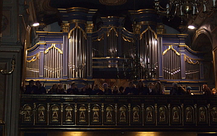

A tymczasem w Cameracie...
.
2012-01-06
Zimowy wieczór styczniowy, ale tylko z nazwy, bo brak śniegu i mrozu, ale to nam nie przeszkadza. Mamy wszyscy zimowy, świąteczny nastrój. Msza za Cameratę w kościele Św. Klemensa w Wieliczce z okazji 15-lecia chóru. Jesteśmy gospodarzami na mszy, oraz oprawiamy ją muzycznie razem z chórem Szkoły Muzycznej I stopnia w Wieliczce w części stałej. Reszta chórów i zespołów wykonuje kolędy w czasie mszy.Stowarzyszenie Muzyczne - Chór Camerata, Szkoła Muzyczna I stopnia w Wieliczce i Ks. Zbigniew Gerle - Proboszcz Parafii Św. Klemensa są organizatorami VI Wielickiego Wieczoru Kolęd, który odbędzie się po mszy. Na zaproszenie organizatorów odpowiedziało 9 zespołów.
Wszystko przygotowane. „Opiekunowie” poszczególnych chórów i zespołów czekają na ich przybycie.
Msza Święta:
Na wejście – Mała Wieś „Kiedy Król Herod królował”
Kyrie - Szkoła Muzyczna I stopnia-Wieliczka
Gloria - Camerata
Psalm, Alleluja - Klemenciaki
Ofiarowanie – Lutnia „Dzisiaj w Betlejem”
Sanctus Benedictus – Szkoła Muzyczna I stopnia-Wieliczka
Agnus Dei – Szkoła Muzyczna I stopnia-Wieliczka
Komunia – Yanabanda „Przystąpmy do szopy”
Klemenciaki „Cicha noc”
Tutte de Corde + Państwowa Szkoła Muzyczna I stopnia-Gdów „W żłobie leży”
Zakończenie – wszyscy z ludem „Mędrcy świata”
Grupa „Kolędnicy zza okna” z Małej Wsi pod kier. Józefa Kani
W Betlejem sławnym
A to co, ziemianie !
Pastuszkowie, bracia mili
Mietniowiacy pod kier. Marii Idzi
Zjawiło się nam dziś coś nowego
Nie masz ci nie masz nad tą gwiazdeczkę
Gore gwiazda Jezusowi w obłoku
Yanabanda pod dyr. Sylwii Dzióbek
Dadme albricias
In Dulci Jubilo
A śpis Bartek
Chór Towarzystwa Śpiewaczego Lutnia pod dyr. Jadwigi Szado
Dziś w niebie Anieli
Noc cicha w śnie
Adeste fideles
Chór Szkoły Muzycznej I stopnia w Wieliczce pod dyr. Izabeli Szoty
Przybieżeli do Betlejem
Świeci gwiazdka
Chór Publicznej Szkoły Muzycznej I stopnia w Gdowie pod dyr. Elżbiety Gawryszewskiej
Nuż my bracia pastuszkowie
A cóż z tą Dzieciną
Schola Parafii Św. Klemensa Klemenciaki pod dyr. Agnieszki Korczyńskiej
Jam jest dudka
Z narodzenia Pana
Chór Tutte de Corde pod dyr. Elżbiety Gawryszewskiej
Święta Panienka Syna usypiała
Dzisiaj w Betlejem
Pasterze mili Radość nam nastała (pastorałka lwowska)
Chór Camerata pod dyr. Izabeli Szoty
Jezus malusieńki
Kolęda (Anna Nędza – solo) Leży Jezus maleńki
Chóry tutti:
Triumfy Króla Niebieskiego
Bóg się rodzi
przy udziale publiczności i akompaniamencie organów (Leszek Surmacz)
Podziękowanie, wręczenie pamiątkowych dyplomów dla uczestników koncertu
Przybywają pierwsze zespoły i chóry. Zajmują wskazane miejsca. Kościół zapełnia się powoli.

Wszystko odbyło się zgodnie z planem. Chóry śpiewały pięknie kolędy i pastorałki. My oczywiście też, co było widać po uśmiechu naszej pani dyr. Izabeli Szoty. Po koncercie jeszcze chwila rozmowy w gronie znajomych i rozchodzimy się. Jutro czeka nas ciężki dzień, czyli próba generalna z orkiestrą przed występem jubileuszowym.

© Stowarzyszenie Muzyczne Chór Camerata Wieliczka